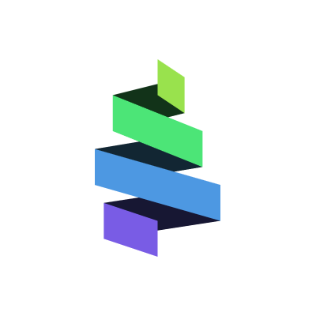
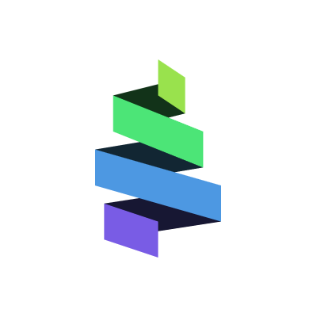

Olá, sou
Olá, sou
sergio.henrique.farm@gmail.com
(21) 983 737 647
Acredito que somos felizes na medida que proporcimamos felicidades as pessoas que nos amam e àquele que nos conhecem porque são próximos e assim sabem dos nossos defeitos e ainda sim nos amam, advertem, corrigem e sobretudo reconhecem nossos valores e princípíos.
Sempre pensei que devia conquistar tudo que pudesse o mais cedo possível, por isso diferente dos meus contêmporaneos, dediquei-me a estudar e trabalhar desde cedo, bem jovem...
Hoje vejo que o que conquistei é muito bom, acredito que há mais, muito mais, porque posso fazer; Assim estou me reiventando profissionalmente.
Sempre pensei que o serviço público fosse o que eu queria buscar para mim, então chegou o momento que consegui e tornei-me bombeiro militar, entretanto vejo que a iniciativa privada está mais ligada ao que compreendo ser melhor para mim e para sociedade como todo, então há um tempo vim refletindo e analisando a prespectiva de uma nova carreira: tecnologias e sistemas de computadores.
Vejo que sempre tive certo interesse e certa facilidade para o tema, acredito que a cegueira por prestar provas para concursos públicos afastou-me.
Passado o primeiro encanto, ainda vejo excelente oportunidades surgindo àqueles que se entregam com seriedade ao estudo e trabalho desse universo de programação de softwares, aplicativos...
Assim acredito que o aperfeiçoamento será necessário com regularidade e constância, tanto para que consiga oportunidades iniciais com para minha evolução profissional que desejo.

 DevPro
CECIERJ
DevPro
CECIERJ
 Web3Dev

Web3Dev
